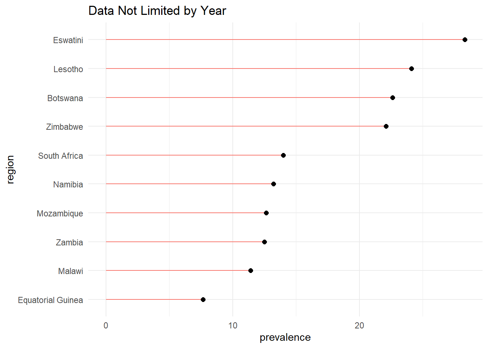
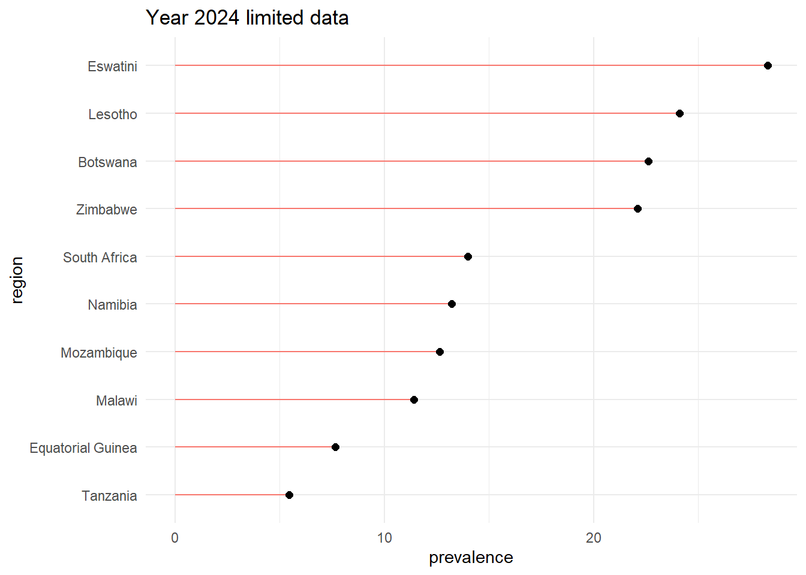

library(readr)
hiv_prevalence <- read_delim("hiv_prevalence.csv", skip = 1,
delim = ";") #this takes care of the excel to imported data conversion.
#Data originally contains a second row of column names, and oddly combines data.
#Further tidying the dataset:
library(dplyr)
library(tidyverse)
hiv_prevalence_clean <-
hiv_prevalence |>
rename(region = ...1, prevalence = `of HIV/AIDS,`,
n_people = `with HIV/AIDS,`, deaths = `from HIV/AIDS,`,
datayear = ...5) |>
mutate(region = str_replace_all(region, "\xa0", "")) |>
mutate(prevalence = str_replace_all(prevalence, "%", "")) |>
mutate(prevalence = as.numeric(prevalence)) |>
mutate(n_people = str_replace_all(n_people, ",", "")) |>
mutate(n_people = as.numeric(n_people)) |>
mutate(deaths = str_replace_all(deaths, ",", "")) |>
mutate(deaths = as.numeric(deaths)) |>
mutate(region = if_else(region == "United States", #to match mapping data later
true = "USA",
false = region))This post explores Global Adult HIV prevalence data pulled from Kaggle.
Introduction
This dataset contains Global Adult HIV prevalence data pulled from the online data source Kaggle, and contains 187 observations. HIV, or Human Immunodeficiency Virus, is a virus that limits your ability to fight other infections due to its own targeting of your body’s immune cells. HIV when left untreated can lead to AIDs, a later stage of the HIV infection that results from said immune system damage. There are current treatments to prolong the lives of those with HIV and limit its further spread, but there are currently no cures available for it.
This blog will mostly focus on the variables region and prevalence to visualize the distribution of HIV in the world; answering what region appears to have the highest prevalence while which appears to have the lowest. We’ll also be making inferences on what continents appear to have greater or lower HIV prevalence.
Dataset Notice:
Upon examining this data, I have found that the year the data was reported is inconsistent. This data set contains reported data on most regions, however the year associated with that entry isn’t uniform across all regions. For example, if I were to limit the observations to only containing those from 2024, my sample size would shrink to only 63 regions to make inferences from. Thus, in the following analyses, to maintain reliable interpretations, the information will be displayed twice. Once in the dataset’s totality (ignoring year source), and once sourcing data only from year 2024 to represent up-to-date information. (2024 also happens to be the year with the most data entries from).
Dataset Variable Decriptions:
region: The geographical area being analyzed.
prevalence: Adult Prevalence (%), Percentage of adults aged 15–49 living with HIV.
n_people: Number of People with HIV/AIDS, Absolute count of individuals living with HIV in the region.
deaths: Annual Deaths from HIV/AIDS, Number of deaths attributed to HIV/AIDS annually.
datayear: Year of Estimate, The year when the data was collected or estimated.
Exploring this data set
Ranking regional HIV prevalence
#create subdataset of top 10 HIV prevalence regions in 2024
# all year data:
hiv_prevALL_top10 <-
hiv_prevalence_clean |>
arrange(desc(prevalence)) |>
slice(1:10) |>
mutate(region = fct_reorder(region, prevalence))
#lollipop plot - all data
ggplot(data = hiv_prevALL_top10, aes(x=prevalence, y=region)) +
geom_segment(aes(yend = region, x=0, xend = prevalence, color = "blue3"), show.legend= FALSE) +
geom_point(size = 2) +
theme_minimal() +
labs(title = "Data Not Limited by Year")
The above lollipop plots display the top 10 regions in this data set that have the highest prevalence of HIV. It appears that the top four regions have HIV prevalence around 24% (Eswatini, Lesotho, Botswana, and Zimbabwe), and have a lead in HIV prevalence by roughly 5% in comparison to the next ranked regions. These are also close in prevalence, hovering around 13% prevalence before the last two ranked regions that are collectively about 3% lower in prevalence. When all the data is held consistent at the same timestamp of year 2024, we see a similar trend:
#2024 data:
hiv_prev24_top10 <-
hiv_prevalence_clean |>
filter(datayear == "2024") |>
arrange(desc(prevalence)) |>
slice(1:10) |>
mutate(region = fct_reorder(region, prevalence))
#lollipop plot - 2024 data
ggplot(data = hiv_prev24_top10, aes(x=prevalence, y=region)) +
geom_segment(aes(yend = region, x=0, xend = prevalence, color = "blue3"), show.legend= FALSE) +
geom_point(size = 2) +
theme_minimal() +
labs(title = "Year 2024 limited data")
The most notable difference between the collective data on prevalence and the data restricted to year 2024 is in the rankings for 7th through 10th. When year isn’t considered, the country that is introduced to this visualization is Zambia instead of Tanzania, taking 7th and bumping Malawi and Equatorial Guinea down a rank. The fact that there isn’t much of a shift in HIV prevalence when considering year could suggest that
- A) more heavily HIV affected countries update their data more often, or
- B) Regardless of the data’s time stamp, certain regions consistently have a higher prevalence of HIV.
Mapping HIV prevalence
#get drawing coordinates to make world map
world_map <- map_data("world")
#join the datasets:
full_worldHIV <- left_join(world_map, hiv_prevalence_clean,
join_by(region == region))
ggplot(data = full_worldHIV, aes(x = long, y = lat,
group = group)) +
geom_polygon(aes(fill=prevalence)) +
scale_fill_viridis_c() +
coord_map(projection = "gilbert") +
xlim(c(-180,180)) +
theme_void() +
labs(title = "Global HIV prevalence(%)")
Mapping HIV prevalence to a map of the world gives us further insight as to relative continental prevalence. Based on the map, we can see that the southern part of Africa appears to have higher HIV prevalence compared to other continents of the world. What limits this visualization however, is the greyed out countries showing a lack of data for that region. This is either due to a mismatch in region label when joining the datasets, or a lack of data for that region. The main takeaway is that Southern African regions appear to be the most affected by HIV in their population.
Conclusions
Flaws
- My approach to this dataset, as earlier mentioned, is limited by the temporal stamp of the data reported. Although it didn’t vastly affect interpretations, it should still be considered when evaluating HIV prevalence.
- The world map visualization of prevalence is missing considerable data, which limits the confidence of my conclusion that Southern Africa is the the most affected by HIV.
## Future Directions - Prevalence isn’t the only way to visualize the spread and impact of a disease, and in future visualizations the number of people with the disease, as well as deaths from it, should be presented.
- If given more time, I would comb through the region labels and adjust them or confirm that they match the labels within the world_map data set. Making sure the labels align would insure that all the regions in the HIV data set are actually represented in the map.
Connections to Data334
- Lollipop plot: This is a good visualization because the line segments all start at 0, so they provide an accurate communal baseline for reader interpretation. The size and color of the lollipops has also been adjusted for aesthetic pleasure. To distinguish between the 2 datasets used, a title above the plot is also utilized, so its easier for the reader to orient themselves.
- Sequential map: This is a good visualization as the colors are color blind friendly, and there is no background grid or fluff to disorient the viewer. A label at the top clarifies what data is being used, and the color scale is sequential since it best represents the prevalence percentage scale (opposed to diverging or catagorical). One spot of critique would be limiting the greyed out countries, but that is already addressed. A map such as this is also a good visualization for this data, since it allows the reader to further pull ideas about geological hotspots of HIV for the globe, an inference that you couldn’t as confidently make out in just the lollipop plot.
References/Sources:
Global HIV Data from Kaggle:
Global Adult HIV Prevalance Data (2024 Updated)
https://www.kaggle.com/datasets/kanchana1990/global-adult-hiv-prevalance-data-2024-updated
Supplementary HIV information:
https://www.hiv.gov/hiv-basics/overview/about-hiv-and-aids/what-are-hiv-and-aids
ChatGPT for data cleaning hitch:
[My Prompt: I have a dataset in R studio, where one my columns has observations that are all surrounded by quotations like “0Eswatini”. I want to isolate just the region name out of each observation, but attempting to use separate() and listing the xa0 doesn’t work. How can I trim the observations, and why doesn’t separate() work here?]
AI Solution I chose: AI suggestion: str_replace_all(). This offered AI solution takes the tidyr package and mutate() solution route. I chose this because I’m already using this package for cleaning and am familiar with mutate().